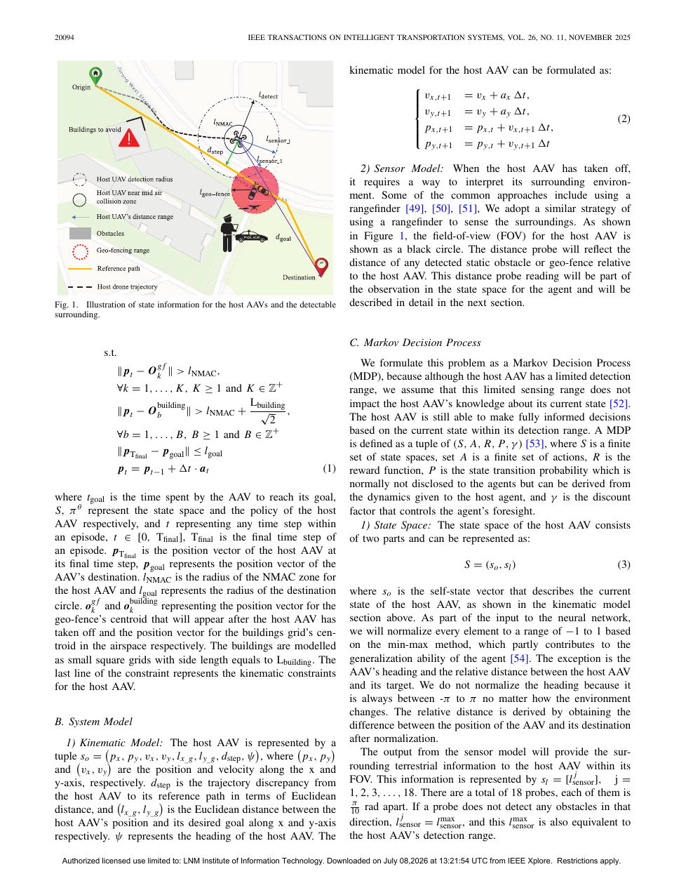

| Title | Real-time avoidance of obstacles and emergent geo-fences for urban air mobility using deep reinforcement learning |
| Authors | Zhang et al. |
| Year / Venue | 2025 / IEEE (received Jul 2024, revised Apr 2025, accepted Jul 2025, published Jul-Nov 2025) |
| Funding | National Research Foundation (NRF), Singapore; Civil Aviation Authority of Singapore (CAAS), Aviation Transformation Program (ATP) |
| Pages | 18 pages |
| Scholar | Chao Yan (时属南京航空航天大学自动化工程学院) |
| Paper ID | 10111 |
本文针对城市空中交通（UAM）场景中密集建筑障碍物和动态突现禁飞区（geo-fences）并存的挑战，提出了FMGRU-DDPG算法——一种融合门控循环单元（GRU）、输入随机化层和特征匹配损失（Feature Matching Loss）的深度确定性策略梯度框架。该方法将geo-fences视为可在飞行途中动态出现的临时约束（而非预先静态标注），利用GRU的循环记忆捕获时序依赖、随机化层增强策略对动态约束的鲁棒性、特征匹配损失抑制路径偏离。在新加坡真实住宅区空间数据构建的仿真环境中，面对多达10个动态geo-fences时仍保持超过90%的目的地到达成功率，且在训练未见区域仍维持超过60%成功率，显著优于GRU-DDPG和原始DDPG。该工作是面向UAM战术冲突消解的首批系统性DRL方案之一。
这个工作的核心insight是什么？
UAM场景中，geo-fences不是静态障碍——它们会在飞行过程中因人群聚集、恶劣天气等突发事件临时涌现。现有方法将geo-fences视为预先已知的静态禁区，或仅处理静态建筑物障碍，无法应对这种"未知环境中约束的实时演化"。本文的insight在于：将动态geo-fence规避建模为部分可观测马尔可夫决策过程（POMDP），以GRU的记忆能力压缩约束演化的时序历史，同时用输入随机化和特征匹配损失两项互补机制，提升策略对动态约束分布变化的适应能力和泛化能力。三者形成的协同效应——GRU提供时序上下文，随机化层强制策略不过度依赖特定输入模式，FM损失正则化特征空间——使得AAV在密集建筑+动态geo-fences的复合挑战下首次达到实用级成功率。
| 灵感来源 | 核心洞察 | 具体体现 |
|---|---|---|
| POMDP与部分可观测性理论 | 动态geo-fence的出现/消失历史无法从单帧观测感知，需要时序记忆 | 使用GRU聚合历史观测序列，将隐状态作为策略网络的输入上下文 |
| Domain Randomization / 泛化理论 | 训练环境与未见测试环境的分布差异导致策略退化；在输入层注入随机扰动可增强鲁棒性 | 在神经网络输入观测后插入随机化层（randomized layer），对传感器读数施加可控噪声 |
| Feature Matching (GAN-inspired) | 约束中间特征表示的分布相似性比仅匹配最终输出更有利于策略稳定和泛化 | 引入Feature Matching Loss，使Actor的特征表示在不同环境条件下保持一致 |
| DDPG连续控制框架 | UAM中的避障/绕飞需要连续的速度和航向控制，离散动作空间不够精细 | 基于DDPG的Actor-Critic架构输出连续飞行控制量（速度矢量、偏航角等） |
flowchart LR
A["🌎 新加坡住宅区
真实空间数据
建筑物 + 动态geo-fences"] --> B["📡 观测获取
LiDAR扫描
GPS位姿
目标方位"]
B --> C["🎲 输入随机化
高斯噪声 N(0,σ²)"]
C --> D["🔌 GRU编码
时序观测→隐状态 ht"]
D --> E["🎯 Actor-Critic
DDPG决策"]
E --> F["✈ 飞行控制
速度 vt
偏航率 ψt"]
F --> G{"✅ 到达目标?"}
G -- 是 --> H["🏆 成功
(成功率 >90%)"]
G -- 否 --> B
E -.-> I["📏 Feature Matching Loss
特征空间正则化"]
I -.-> E
D -.-> J["💾 经验回放池
(st, at, rt, st+1)"]
J -.-> E
flowchart TB
subgraph ENV["🌎 仿真环境 (新加坡真实数据)"]
OBS["观测 ot:
- LiDAR 360°扫描(N段)
- 目标相对距离/方位
- AA V速度与姿态
- 当前geo-fence状态"]
DYN["动态geo-fences:
最多10个临时出现
位置随机/时间随机
持续时间可变"]
end
subgraph NET["🏨 FMGRU-DDPG神经网络"]
RL["输入随机化层
õt = ot + ϵ, ϵ~N(0,σ²I)"]
GRU["GRU单元
ht = GRU(õt, ht-1)"]
ACTOR["Actor网络 μθ
at = μ(ht) + 探索噪声"]
CRITIC["Critic网络 Qφ
Q(st, at)"]
TARGET_A["目标Actor μ-"]
TARGET_C["目标Critic Q-"]
end
subgraph LOSS["📏 损失函数"]
PL["策略梯度: ∇θJ ≈ E[∇aQ · ∇θμ]"]
FM["特征匹配损失:
LFM = ∥E[f(s)]-E[fref(s)]∥²"]
TD["TD误差: Lcritic = E[(yt - Q(st,at))²]"]
TOTAL["总损失: L = Lcritic + λ1Lactor + λ2LFM"]
end
OBS --> RL
RL --> GRU
GRU --> ACTOR
GRU --> CRITIC
ACTOR --> CRITIC
ACTOR --> DYN
CRITIC --> PL
CRITIC --> TD
ACTOR --> FM
TARGET_A --> TARGET_C
PL --> TOTAL
FM --> TOTAL
TD --> TOTAL
本文将UAM场景下障碍物与动态geo-fence规避问题建模为部分可观测马尔可夫决策过程（POMDP），定义为六元组 $\\langle \\mathcal{S}, \\mathcal{A}, \\mathcal{O}, \\mathcal{T}, \\mathcal{R}, \\mathcal{Z} \\rangle$：
$$\\mathcal{S}: \\text{真实环境状态空间（AAV位姿、障碍物位置、geo-fence状态、目标位置）}$$
$$\\mathcal{A}: \\text{连续动作空间，} a_t = [v_t, \\dot{\\psi}_t]^T \\in \\mathbb{R}^2$$
$$\\mathcal{O}: \\text{观测空间，} o_t = [d_1, d_2, ..., d_N, \\Delta x_{goal}, \\Delta y_{goal}, v_{t-1}, \\psi_{t-1}]$$
$$\\mathcal{T}: \\mathcal{S} \\times \\mathcal{A} \\rightarrow \\Delta(\\mathcal{S}), \\text{状态转移概率（包含AAV动力学和geo-fence随机涌现）}$$
$$\\mathcal{R}: \\mathcal{S} \\times \\mathcal{A} \\rightarrow \\mathbb{R}, \\text{奖励函数}$$
$$\\mathcal{Z}: \\mathcal{S} \\times \\mathcal{A} \\rightarrow \\Delta(\\mathcal{O}), \\text{观测概率（LiDAR噪声等）}$$
$$R(s_t, a_t) = R_{goal} + R_{obstacle} + R_{geofence} + R_{deviation} + R_{step}$$
其中各项定义为：
$$R_{goal} = \\begin{cases} +R_{arrive} & \\text{if } d_{goal} < d_{threshold} \\\\ 0 & \\text{otherwise} \\end{cases}$$
$$R_{obstacle} = \\begin{cases} -R_{collision} & \\text{if collision with building} \\\\ 0 & \\text{otherwise} \\end{cases}$$
$$R_{geofence} = \\begin{cases} -R_{breach} & \\text{if entering geo-fence} \\\\ 0 & \\text{otherwise} \\end{cases}$$
$$R_{deviation} = -\\alpha \\cdot \\frac{d_{deviation}}{d_{direct}} \\quad \\text{(路径偏离惩罚)}$$
$$R_{step} = -\\beta \\quad \\text{(每步时间惩罚，鼓励快速到达)}$$
| 类别 | 条目 | 具体规格 |
|---|---|---|
| 输入 | LiDAR距离扫描 | 360°均匀分为N个扇区（如36或72段），每段返回最近障碍物距离 |
| 相对目标位置 | 目标在AAV机体坐标系下的距离 $d_t$ 和方位角 $\\theta_t$ | |
| AAV自身状态 | 当前速度大小 $v_{t-1}$，当前航向角 $\\psi_{t-1}$（或航向角速率） | |
| 历史观测帧数 | 最近 $K$ 帧观测（如 $K=10$）作为GRU的输入序列 | |
| 输出 | 速度控制量 $v_t$ | 连续值，范围 $[0, v_{max}]$，控制AAV前进速度 |
| 偏航角速率 $\\dot{\\psi}_t$ | 连续值，范围 $[-\\dot{\\psi}_{max}, +\\dot{\\psi}_{max}]$，控制AAV转弯 | |
| 约束 | 建筑物碰撞 | 严格禁止（终止条件），碰撞即判定失败 |
| Geo-fence侵入 | 严格禁止（终止条件），一旦进入动态围栏即判定失败 | |
| 最大步数 | 每episode限制最大步数 $T_{max}$，超时视为失败 | |
| 评测 | 成功率 (Success Rate) | $\\frac{\\text{到达episode数}}{\\text{总episode数}}$，核心指标 |
| 路径偏离度 | 实际飞行路径长度与直线距离的比值 |
UAM场景中动态geo-fence规避的本质困难在于三个时间尺度的耦合：
这三个尺度的耦合使得问题不能简单地分解为"先规划再执行"——因为geo-fence的出现会实时改变可行空间，需要一种能够在线融合历史观测、当前感知和未来预测的端到端决策方案。
| 方法类别 | 核心思路 | 局限性 | 代表性工作 |
|---|---|---|---|
| 经典路径规划 (A*, RRT, PRM) |
在静态地图上离线计算全局最优路径，在线重规划应对变化 | 重规划延迟不满足实时性要求；需要完整地图先验；动态geo-fence使地图频繁失效 | LaValle (2006), Karaman & Frazzoli (2011) |
| 人工势场法 (APF) |
目标产生吸引力，障碍物产生排斥力，合力引导飞行 | 局部极小值陷阱；在密集障碍+动态围栏场景振荡严重；无法处理时序约束 | Khatib (1986), Ge & Cui (2002) |
| 模型预测控制 (MPC) |
在预测时域内优化控制序列，滚动执行第一步 | 计算成本随障碍物数量增长；动态围栏使预测模型不准确；需要精确动力学模型 | Richards & How (2002) |
| 纯DRL方法 (DDPG/PPO/SAC) |
端到端学习从观测到控制的映射，无需显式地图 | 缺乏时序记忆导致对动态约束响应滞后；训练-测试分布偏移导致泛化差 | Lillicrap et al. (2015) |
geo-fences不是静态特征——它们可以在AAV飞行途中因突发事件（如人群聚集、恶劣天气预警）而临时涌现。当AAV在时刻 $t$ 观测到一个区域"安全"时，这并不意味着该区域在时刻 $t+\\Delta t$ 仍然安全。单帧观测无法捕捉这种隐式的时序依赖。更复杂的是，geo-fence的出现位置和持续时间服从某种空间-时间联合分布（更可能在人群密集区域、更可能在特定时段出现），传统方法缺乏对这种分布建模的能力。这本质上是一个部分可观测性（Partial Observability）问题：geo-fence是否"即将出现"是一个隐藏变量，需要通过历史观测序列进行推断。
AAV的飞行控制是连续域问题——速度和航向角速率需要精确的连续值，离散化会引入量化误差和控制不稳定性。在此连续动作空间上，策略必须同时满足：(a) 避免与静态建筑物的碰撞；(b) 避免进入动态出现的geo-fences；(c) 保持向目标方向前进；(d) 在约束(a)(b)与目标(c)冲突时做出合理折衷（例如是否需要绕飞，绕飞路径的偏折程度）。这四个目标之间存在固有的竞争关系——过于保守的避障会导致路径过长，过于激进的目标趋向会导致碰撞风险升高。在连续动作空间中设计能够自动平衡这些竞争的奖励函数和策略架构是非平凡的。
UAM系统将部署在不同的城市区域，每个区域的建筑密度、道路拓扑、geo-fence触发模式均不相同。DRL策略在训练区域学到的行为模式往往过度拟合训练场景——例如，策略可能记忆了"在第3栋楼左转"这样的空间特异性策略，而非"在遇到密集障碍时寻找开放方向"这样可泛化的行为模式。论文明确验证了这一挑战：在未见区域中，DDPG和GRU-DDPG的性能均显著下降。引入输入随机化和特征匹配损失的动机正是为了解决这一泛化问题——前者通过训练时注入噪声扩展训练分布，后者通过特征空间约束保持核心导航能力不因环境变化而退化。
Actor更新（确定性策略梯度）：
$$\\nabla_{\\theta} J \\approx \\mathbb{E}_{s_t \\sim \\rho^\\beta} \\left[ \\nabla_a Q(s, a | \\phi) \\big|_{s=s_t, a=\\mu(s_t|\\theta)} \\cdot \\nabla_\\theta \\mu(s | \\theta) \\big|_{s=s_t} \\right]$$
Critic更新（TD学习）：
$$y_t = r_t + \\gamma Q'(s_{t+1}, \\mu'(s_{t+1} | \\theta') | \\phi')$$
$$L_{critic}(\\phi) = \\mathbb{E}_{s_t, a_t, r_t, s_{t+1} \\sim \\mathcal{D}} \\left[ (y_t - Q(s_t, a_t | \\phi))^2 \\right]$$
目标网络软更新：
$$\\theta' \\leftarrow \\tau \\theta + (1-\\tau) \\theta', \\quad \\phi' \\leftarrow \\tau \\phi + (1-\\tau) \\phi'$$
GRU状态更新方程（将观测序列编码为信念状态）：
$$z_t = \\sigma(W_z \\cdot [h_{t-1}, \\tilde{o}_t] + b_z) \\quad \\text{(更新门)}$$
$$r_t = \\sigma(W_r \\cdot [h_{t-1}, \\tilde{o}_t] + b_r) \\quad \\text{(重置门)}$$
$$\\tilde{h}_t = \\tanh(W_h \\cdot [r_t \\odot h_{t-1}, \\tilde{o}_t] + b_h) \\quad \\text{(候选隐状态)}$$
$$h_t = (1 - z_t) \\odot h_{t-1} + z_t \\odot \\tilde{h}_t \\quad \\text{(最终隐状态)}$$
其中 $\\tilde{o}_t = o_t + \\epsilon_t, \\epsilon_t \\sim \\mathcal{N}(0, \\sigma^2 I)$ 为经过随机化层处理后的观测。
FM损失定义：
$$\\mathcal{L}_{FM} = \\left\\| \\mathbb{E}_{s \\sim \\mathcal{D}} \\left[ f_{\\theta}^{mid}(\\tilde{o}|h) \\right] - \\mathbb{E}_{s \\sim \\mathcal{D}_{ref}} \\left[ f_{ref}^{mid}(o) \\right] \\right\\|_2^2$$
其中：
总训练目标：
$$\\mathcal{L}_{total} = \\mathcal{L}_{critic} - \\alpha \\cdot J(\\theta) + \\beta \\cdot \\mathcal{L}_{FM}$$
其中 $\\alpha$ 和 $\\beta$ 为权重超参数，$J(\\theta)$ 为策略目标函数。
$$\\tilde{o}_t^{(i)} = o_t^{(i)} + \\epsilon_t^{(i)}, \\quad \\epsilon_t^{(i)} \\sim \\mathcal{N}(0, \\sigma_i^2)$$
其中 $i$ 为观测向量的第 $i$ 个分量，$\\sigma_i$ 可针对不同传感器类型设置：
| 参数 | 含义 | 取值/范围 |
|---|---|---|
| $N_{lidar}$ | LiDAR扫描线数 | 36 或 72 (扇区数) |
| $K$ | GRU输入序列长度 | 10 (历史观测帧数) |
| $h_{dim}$ | GRU隐状态维度 | 128 或 256 |
| $v_{max}$ | 最大飞行速度 | 取决于AAV型号 (如15 m/s) |
| $\\dot{\\psi}_{max}$ | 最大偏航角速率 | 取决于AAV机动能力 (如60°/s) |
| $\\sigma$ | 输入随机化噪声标准差 | 可调超参数 (例如0.05-0.2) |
| $\\lambda_{FM}$ | FM损失权重 | 可调 (例如0.01) |
| $\\gamma$ | 折扣因子 | 0.99 |
| $\\tau$ | 目标网络软更新系数 | 0.001 |
| $|\\mathcal{D}|$ | 经验回放池大小 | 10^5 或 10^6 |
| $B$ | 小批量大小 (Batch Size) | 64 或 128 |
| $lr_{actor}$ | Actor学习率 | 10^{-4} |
| $lr_{critic}$ | Critic学习率 | 10^{-3} |
在POMDP框架下，最优决策需要基于信念状态 $b_t(s) = P(s_t = s | o_{1:t}, a_{1:t-1})$——即给定历史观测序列条件下当前真实状态的概率分布。然而，直接维护和更新信念状态在高维连续状态空间中不可行。GRU提供了一种隐式近似：
$$h_t = \\text{GRU}(o_t, h_{t-1}) \\approx \\text{sufficient statistic of } b_t(s)$$
从信息论角度，GRU的隐状态 $h_t$ 压缩了观测历史 $o_{1:t}$ 中与未来决策相关的全部信息（充分统计量）。门控机制——特别是更新门 $z_t$ 和重置门 $r_t$——允许网络自适应地决定：当前观测是否包含关于geo-fence状态的新信息（更新门接近1），还是当前环境态势稳定、应保留历史信念（更新门接近0）。具体地：
这种自适应机制使得GRU天然适合处理geo-fence的间歇性涌现模式。
输入随机化层的效果可以从分布鲁棒优化（Distributionally Robust Optimization, DRO）的角度理解。标准DRL优化的是训练分布下的期望回报：
$$\\max_{\\pi} \\mathbb{E}_{P_{train}} [R(\\pi)]$$
而输入随机化实际优化的是以训练观测为中心、以噪声幅度 $\\sigma$ 为半径的Wasserstein球内最差情况下的回报：
$$\\max_{\\pi} \\min_{Q: W(P_{train}, Q) \\leq \\sigma} \\mathbb{E}_Q [R(\\pi)]$$
这迫使策略学习对输入空间中半径 $\\sigma$ 内的所有扰动都不变的鲁棒特征。进一步地，从表征学习视角，随机化层等同于在观测空间上施加了以下约束：
$$\\forall \\epsilon: \\|\\epsilon\\| \\leq \\sigma, \\quad \\pi(o) \\approx \\pi(o + \\epsilon)$$
即策略在输入空间的Lipschitz连续性被显式增强。这使得训练好的策略在面对未见环境时——即使未见环境的观测分布与训练分布有显著差异——只要差异不超过"有效感受野"，策略仍能做出合理决策。
FM损失的精妙之处在于它在特征空间而非动作空间施加约束。在动作空间做行为克隆（标准模仿学习）的问题是：当参考策略（简单指向目标）的动作在geo-fence场景中不可行时，强制匹配动作会产生冲突梯度，损害避障学习。
FM损失通过在中间层做特征匹配避免了这一问题：
$$\\mathcal{L}_{FM} = \\|\\Phi_{mid}(o_{geo}) - \\Phi_{mid}(o_{free})\\|^2$$
其中 $\\Phi_{mid}$ 为中间层特征。这里的关键是：中间层特征编码的是"对场景的理解方式"而非"具体该做什么"。FM损失要求Actor在geo-fence场景下的场景理解方式（如目标方向的特征激活模式）与无障碍场景保持一致，但并不要求最终动作也一致。这实现了以下解耦：
约束层：动作输出层
效果：强制 $\\pi(o_{geo}) \\approx a_{ref}$
问题：geo-fence场景中 $a_{ref}$ 可能不可行 → 冲突梯度
泛化：差（策略被"锁定"到参考行为）
约束层：特征中间层
效果：约束 $\\Phi_{mid}(o_{geo}) \\approx \\Phi_{mid}(o_{free})$
优势：不强制动作一致 → 避障自由度保留
泛化：好（仅约束"理解"，不约束"反应"）
这种设计的深层哲学是：好的泛化需要保持核心感知不变，同时允许行为灵活适应。FM损失在特征层的正则化恰好实现了这种"感知一致性 + 行为灵活性"的分离。

📍 仿真环境示意图: 新加坡真实住宅区空间数据构建的3D环境。该图展示了FMGRU-DDPG的训练/测试环境核心要素：
论文包含以下关键实验图表：
| 指标 | FMGRU-DDPG | GRU-DDPG | DDPG |
|---|---|---|---|
| 成功率 (10 dynamic geo-fences, 训练区) | > 90% | 低于FMGRU | 显著更低 |
| 成功率 (未见环境) | > 60% | 低于FMGRU | 显著更低 |
| 路径偏离度 | 最小 | 中等 | 最大 |
| 泛化损失 (训练区→未见区) | 最小 (约30%) | 中等 | 最大 |
论文的全部实验在基于新加坡空间数据的仿真环境中进行，未涉及硬件在环（HIL）或实物飞行测试。真实UAM环境中存在以下仿真无法完美建模的因素：(a) LiDAR点云的稀疏性和噪声特性（尤其是对细长障碍物如路灯杆的检测）；(b) 通信延迟和GPS定位误差对geo-fence边界感知的影响；(c) 风扰等空气动力学效应导致的轨迹跟踪误差。输入随机化层在一定程度上缓解了噪声鲁棒性问题，但其噪声模型（高斯白噪声）与真实传感器的噪声特性（可能是非高斯、非平稳的）存在差距。该方法的实际部署可行性仍有待验证。
论文将geo-fence建模为随机出现/消失的圆柱体或简单多边形区域。但真实UAM中的禁飞区可能具有更复杂的时空特性：(a) 分层高度限制——不同高度的可飞空域不同；(b) 渐变式禁飞——预警区域（不建议进入）和严格禁飞区域的区别；(c) 时间窗约束——某些区域仅在特定时段禁飞；(d) 不确定性边界——禁飞区边界可能具有概率性质（如"以人群聚集中心为圆心、半径与人群密度成正比"）。当前方法尚未考虑这些更贴近实际的geo-fence特性，将其纳入建模可能需要重新设计观测空间和奖励结构。
论文考虑的是单个AAV在静态建筑和动态geo-fences环境中的导航。真实UAM场景的核心特征是多机共存——多个AAV共享同一空域，彼此互为动态障碍物。这引入了一阶交互（AAV之间直接避碰）和高阶交互（多机决策的相互影响导致环境非平稳性）。将FMGRU-DDPG扩展到多智能体场景并非平凡——GRU的时序编码需要处理其他智能体的行为预测，输入随机化和FM损失的设计也需要针对多智能体交互重新考虑。
虽然论文声称方法是"实时"的，但未提供具体的推理延迟数据。GRU序列处理（需要考虑历史K帧）和神经网络前向传播的总延迟需要满足飞行控制的实时约束（通常要求在10-50ms内完成）。此外，DDPG在复杂场景下的训练收敛本身就需要大量交互样本（数万到数十万episodes），训练效率是否满足实际部署前的调优需求也值得关注。
| 数据/参数维度 | 敏感度 | 影响机制 | 缓解策略 |
|---|---|---|---|
| LiDAR扫描线数 $N_{lidar}$ | ★★★★ | 太少导致障碍检测遗漏（尤其是窄间隙），太多增加输入维度可能导致维数灾难 | 针对场景障碍密度做grid search选择最优 $N$ |
| 输入噪声标准差 $\\sigma$ | ★★★★★ | 过小则泛化效果不足，过大则完全淹没有用信号，策略无法学习 | 采用渐进式噪声衰减：训练初期 $\\sigma$ 较大，随后逐步减小 |
| FM损失权重 $\\lambda_{FM}$ | ★★★★ | 过大导致策略过度保守（不敢偏离直线路径），过小则路径偏离惩罚失效 | 与奖励中的 $\\alpha$ 参数协同调节 |
| GRU序列长度 $K$ | ★★★ | 过短则信念状态信息不足，过长则引入冗余历史并增加延迟 | 通过分析geo-fence出现频率确定合适的记忆范围 |
| 训练/测试区域相似度 | ★★★★★ | 区域差异越大，泛化损失越大；根本性影响方法的实用性 | 在不同风格城区上做多域训练 |
该方法在什么情况下可能失效？
| 步骤 | 内容 |
|---|---|
| ① 问题背景 | 城市空中交通（UAM）旨在利用低空空域实现高效、安全、可持续的短距离城市运输。随着eVTOL和无人机配送等应用快速增长，城市低空空域的交通密度将急剧上升。 |
| ② 现有方法局限 | 目前的避障方法主要处理静态建筑物和预先已知的固定禁飞区。但在真实UAM运营中，禁飞区可能因人群聚集、恶劣天气预警、VIP出行等突发事件动态涌现——这类约束是现有方法无法有效应对的。经典规划方法（A*, RRT）需要完整地图和重规划时间；纯DRL方法缺乏时序记忆导致对动态约束响应滞后。 |
| ③ 核心矛盾 | 矛盾在于动态约束的时序不可观测性与实时决策的连续性需求之间的冲突。geo-fence的出现具有随机性和间歇性，单帧传感器数据无法捕捉其演化模式；同时，飞行控制是连续域决策，离散化会导致控制品质下降。经典的部分可观测性处理（如显式信念状态维护）在高维连续状态空间中不可行。 |
| ④ 本文突破口 | 用循环神经网络（GRU）隐式学习信念状态，以端到端方式解决部分可观测性；同时引入输入随机化（domain randomization的轻量替代）和特征匹配损失（中间层正则化）两个辅助机制，在不牺牲避障灵活性的前提下增强泛化能力和路径保持能力。三者协同形成FMGRU-DDPG框架。 |
| ⑤ 方案设计 | 基于DDPG的Actor-Critic架构 + GRU时序编码 + 输入随机化层 + Feature Matching辅助损失。在新加坡真实空间数据仿真环境中验证，设置动态geo-fence数量从1到10的递增测试，并划分训练/测试区域评估泛化能力。 |
FMGRU-DDPG首次为UAM动态geo-fence规避提供了一个带时序记忆、输入鲁棒性和特征空间正则化的端到端DRL方案，在密集建筑+动态约束的复合场景下达到实用级成功率，其GRU+随机化+FM的三组件协同设计范式为"部分可观测+分布偏移"类DRL问题提供了一个可复用的方法论模板。
如果从头开始研究这个问题，可以沿以下思路推导出类似方案：
本文展示了如何用GRU隐式学习POMDP的信念状态，而无需显式建模状态转移和观测概率。这种模式可以迁移到任何"环境状态存在隐藏时间变量"的DRL问题——例如：无人机跟踪中目标可能短暂被遮挡（隐藏变量：目标是否还在观测盲区内），机器人操作中零件可能间歇性卡住（隐藏变量：零件当前是否被卡住）。核心设计原则是：当环境存在时间维度上的隐藏状态时，考虑在策略网络前插入循环单元（GRU/LSTM）而非仅用前馈网络。
Domain Randomization（在环境参数空间随机化）虽然有效但实现复杂（需要修改仿真环境参数）。本文展示了一个轻量级替代方案：直接在观测空间注入噪声。这种方法的实现成本极低（一行代码的事），且可以与任何DRL算法无缝结合。从理论角度看，观测空间噪声等同于在输入分布上构造了一个平滑的Wasserstein球，提供了对分布偏移的一定程度的鲁棒性保证。在实际应用中，可以先用输入噪声快速实验，确认泛化是瓶颈后再考虑更重的环境级Domain Randomization。
论文将新加坡真实空间数据划分为不相交的训练区域和测试区域，是评估方法泛化能力的严格设计。相比常见的"随机划分episode"（每个episode从全地图随机采样起点和geo-fence位置），空间分离能更真实地反映策略在新城区的表现。这为UAV导航研究的实验设计提供了一个重要参照：不应仅在同一地理区域内的不同起点/终点间测试，而应使用完全不同的地图区域来评估泛化。
| 文献 | 核心内容 | 与本文关系 | 推荐理由 |
|---|---|---|---|
| Lillicrap et al. (2015) - DDPG | 深度确定性策略梯度，连续控制奠基性工作 | 本文算法基座 | 理解DDPG是理解FMGRU-DDPG的前提 |
| Hausknecht & Stone (2015) - DRQN | 在DQN中引入LSTM处理POMDP的Atari游戏 | GRU+POMDP思路的前驱 | 理解为何循环网络能处理部分可观测性 |
| Salimans et al. (2016) - Improved GANs | 提出Feature Matching作为GAN训练的稳定技巧 | FM损失的原始出处 | 理解Feature Matching的数学基础与直觉 |
| Tobin et al. (2017) - Domain Randomization | 通过在仿真中随机化视觉/物理参数实现sim2real迁移 | 输入随机化的方法论前驱 | 对比了解观测层随机化与环境级随机化的权衡 |
| Yan et al. (2024) - Collision-avoiding flocking | 多固定翼UAV在障碍密集环境中的编队避碰 | 同一学者(Chao Yan)的相关工作 | 了解该课题组在多UAV DRL方向的研究脉络 |
| Kochenderfer et al. (2022) - Decision Making Under Uncertainty | POMDP和不确定条件下决策的理论框架 | POMDP建模的理论基础 | 深化对部分可观测决策问题的理论理解 |